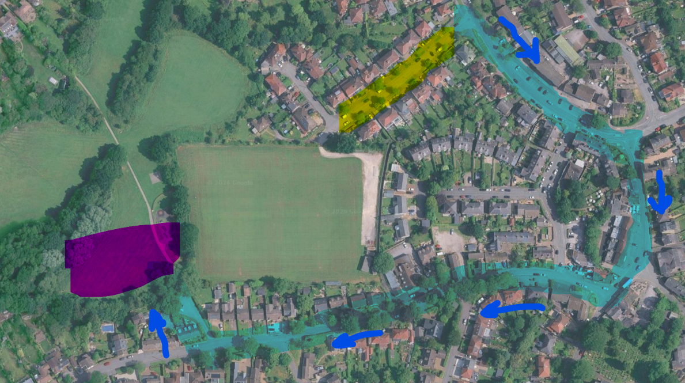

The Dore Scouts Gala Parade is a proud and lively tradition, and a fantastic way to start a day of fun, celebration and community spirit. A huge amount of work has gone into making the gala happen, with many leaders, volunteers, parents and supporters giving huge amounts of time and energy over the preceding weeks / months.
To help everyone enjoy the occasion safely and smoothly, please read the following instructions carefully and help us make the parade look smart, organised and memorable for everyone. Let's kick off the 2026 gala in style.
Order of events
-
12:00 – 12:15
Leaders arrive on The Meadway and collect their respective flags
- Leaders please read & share these instructions with your section(s).
- Make sure parents know which leader(s) will be at The Meadway.
- Stand in the right spot on The Meadway and make yourself visible.
-
12:15 – 12:20
Young People arrive on The Meadway and assemble in their groups
- Young people should arrive promptly and dressed smartly in full uniform.
- Young people should gather in their sections, arranged according to the parade order below, and remain with their leaders until the parade departs.
- Please listen carefully for instructions and help keep the assembly area orderly.
-
12:30 (prompt)
Parade departs
- The parade should arrange and remain in formation, in rows of three abreast.
- Young people must follow the instructions of their section leaders at all times.
- Parents and carers must not walk in the parade or cross through the parade once it is moving. You will get much better photos / videos if you drop young persons off at 12:15 and choose a fixed point on the parade route.
- If you are following the parade after your young person(s) have passed you — please leave plenty of space and do not walk in the parade. Advice is to follow at the back after the parade has passed.
- Please remain on the pavement and keep dogs on leads.
- Do not collect young persons until the final parade out of the arena (after the opening ceremony).
-
12:45 (approx.)
Parade arrives and assembles in the Gala Arena
-
12:45 – 12:55 (approx.)
Opening Ceremony
- On arrival at the Gala Arena, all young people will present on the arena for the official opening ceremony.
- Sections to gather in a semi-circle in the arena as instructed by the parade master.
- Young people (and leaders) to remain orderly & presentable during the ceremony.
- This is an important part of the gala — parents please resist the urge to collect children until the ceremony has fully concluded and the parade has walked out of the arena (in reverse order — Explorers first).
Parade order
| # | Section |
|---|---|
| 1 | Union Flag |
| 2 | DSPA Dancers |
| 3 | Scouts Band |
| 4 | Beavers |
| 5 | Cubs |
| 6 | Scouts |
| 7 | Rainbows |
| 8 | Brownies |
| 9 | Guides |
| 10 | Morris Dancers |
| 11 | Explorers |
Assembly is on The Meadway, between Causeway Head Road and the top of the road. Line up in this order — the Union Flag leads at the front, Explorers bring up the rear.
Parade route & assembly points

Open parade route in Google Maps →
For the safety of everyone taking part
- Beware of traffic moving on The Meadway as we start to assemble.
- Please avoid parking on The Meadway or the parade route.
- Avoid driving on or around the parade route if possible as we approach 12:15.
- It's going to be hot & sunny — please arrive hydrated and well prepared.